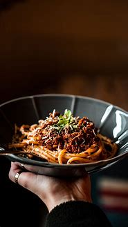

Basic mothods of cooking
Use of food,fuel and equipment
The characteristics of a good,basic recipe are:
Follow a recipe
- Make as much use of all food as posible,do not waste it during preparation

- Store food properly
- Turn down the burner as soon as the food reaches boiling point
- Have the food ready to put in the oven as soon as the oven is hot
- Most ovens are well insulated and hold an oven temperature for a short time after they have been turned off